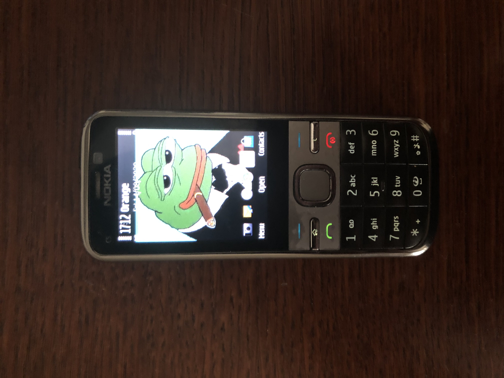

ŽIVOT BEZ AJFÓNU
Jano Cement | Článok
Posledného 2 a pol mesiaca (približne) som používal regulérny tlačítkový mobil. Prežil som. Nie len to, cítil som sa počas toho obdobia lepšie. Preto keď som sa pred dvoma týždňami vrátil k iPhonu, vydržal som s ním len 5 dní a vrátil som sa späť k Nokii. Pravdebodobne natrvalo. Nejdem sa tváriť že som vďaka tejto zmene dosiahol nirvanu, zjednotenie tela a mysle, alebo niečo podobné. Ale prinieslo to niekolko rozdielov, negatívne aj pozitívne. Vopred prehlásim že počas celého "experimentu" som mal (aj stále mám) záložný, polorozbitý smartfón ktorý používam na nejaké veci, ale o tom neskôr.
Koľko krát sme to počuli od starších? "sTáLe Sú Na MoBiLoCh..." Ale je to pravda, stále sme na mobiloch. Ja osobne som mával screentime medzi tromi až štyrmi hodinami denne, teraz je to tak 5 minút. Poznám ľudí ktorí mávajú sedem až osem hodín, o.O. Nejdem sa tu sťažovať a myslím že ani starší by sa nemali. Predsa len, sme druhogeneračná kópia ich samotních. Keby vyrastali v našej dobe, boli by na tom tak isto. Dôležitejšie je identifikovať problém a nájsť na neho riešenie, no a posledne ho uplatniť. Veľa z nás už problém identifikovalo, veľa z nás vie aké je riešenie, ale len malé percento vystúpi z normy a uplatní ho. Prečo? To neviem, možno z lenivostni, z ľahostajnosti, možno aj zo strachu, ťažko povedať. Pointa je že sme stále na mobiloch a prudká väčšina z nás nedokáže náš screentime kontrolovať. Nie sme biologicky pripravení na to aby sme sa kontrolovali. Z vlastnej skúsenosti viem že je ľachšie nerobiť niečo vôbec ako sa to snažiť kontrolovať a "tally-countovať" si koľko krát ešte čo môžete. A ešte lachšie je keď k tomuto zakázanému ovociu nemáte prístup. Keď doma nemáte ten balík čipsov na ktorý máte neskutočnú chuť, tak ho proste nemáte doma. Smola. V tomto prípade to bolo to isté. Nemusel som sa v ničom kontrolovať, nemusel som si strážiť čas, proste som žil môj život.
Ako bol môj život ovplivnený?
Anti-Autizmus a Nuda
Prvý rozdiel čo som si všimol; bol som menej retard v spoločenských interakciách. Všetci mladí ľudia majú zvyk vytiahnúť si mobil po prvej sekunde ticha pri hociakej komunikácii. Keď je to v skupine, ako tak chápem že niekedy vás moc nezaujíma o čom je reč, ale ste s niekym na obede, to je ceľkom čudné. Keď mám pri sebe tlačítkový mobil, buď bude ticho alebo niečo poviem, lebo keď si z vrecka vytiahnem tlačítkový mobil a budem a tváriť že niečo na ňom robím, bude to ešte trápnejšie. A život je o to ľachší, lebo môj malý mozog neodbieha od konverzácie a uvedomuje si že to trápne ticho nie je vôbec trápne, je to len ticho. Môžem porozmýšlať o tom čo poviem, čo som počul alebo o niečom úplne inom. Ale nemusím mentálne odbiehať k mobilu aby ma zachránil pred tichom. Alebo pateticky refrešovať nejaký feed. Toto nadväzuje aj na druhý bod a to je pohľad na nudu. Keď mám pri sebe mobil (smartfón) a nie som s niekym alebo nerobím niečo, mám tendenciu vytiahnúť mobil a "relaxovať", lebo sa nudím. Počúvam hudbu, som na instagrame, googlim, redditujem, pozerám videá (väčšinou spasticky všetky aktivity naraz). Ale keď túto možnosť nemám, som nútený sa nudiť, tak robím veci ako; rozmýšlanie (wow), pozorovanie okolia alebo hoci čo iné. Aktivity ktoré sú reálne relaxujúce a filtrujúce pre môj mozog oproti pseudo-relaxu ako pozeranie Netflixu do nemoty, pri čom sa náš mozog skôr roztápa. A keď som doma a nudím sa, buď pracujem na niečom reálne produktívnom, pozriem si dobrý film, prečítam dobrú knihu, niečo sa naučím, s niekym sa stretnem, alebo robím hoci čo iné keďže nemám možnosť sa roztápať pri mobile. Samozrejme často sa roztápam pri počítači a na to som liek ešte nenašiel.
Pripravenosť a Sústrdenosť
Keď som mal iPhone, neriešil som nič. Kedy a kde mám byť? Čo a ako spraviť? Kde sa stretneme? Nič z tohoto nemusíte riešiť, lebo ste schopný vyriešiť všetko instatne keďže ste večne pripojený na internet. S tlačítkovým mobilom tento luxus nemáte. Asi pred týždňom som sa išiel s jednou známou najesť a deň pred tým som si pripravoval list reštaurácií s ich adresami a v hlave som si mapoval trasy z miesta kde sme sa mali stretnúť. Pripadalo mi to čudné v porovnaní s predošlými zvyklostami, keď som všetko nechával nedoriešené a polodohodnuté. Stal som sa dochvílnejším a pripravenejším vo viacerych oblastiach. Keď niekam idem alebo niečo robím, rozmýšlam nad krokmi dopredu, plánujem a pripravujem. Toto som robieval aj pred tým ale teraz si to všímam oveľa viac, najmä keď idem von alebo sa mám s niekym na niečom dohodnúť.
Dysfunkčnosť a Pohľady
Všetko dobré prináša aj niečo zlé. Toto rozhodnutie malo dve veľmi evidentné negatíva. Dysfučnosť mi bila do očí ako prvá. Ešte v prvých dňoch experimentu som bol vonku s kamarátom a museli sme sa niekam dostať. Nikam sme sa neponáhlali ale kamarát navrhol že podme BOLT kolobežkou (vymoženosť modernej Bratislavy). Aby ste ju zapli potrebujete BOLT aplikáciu. On aplikáciu mal, ja nie. Odmietal som s ním ísť na jednej kolobežke, mal som byť vzadu, také poníženie... Chvíľu sa rozčuľoval, ale išli sme pešo. Pointa je že modernom svete sa v istých situáciách bez smartfónu jednoducho NEZAOBÍDETE. Ja sa posnažím žiť s tlačítkovým mobilom čo najdlhšie ale je len otázka času kedy nám mobily budú priraďované pri narodení. Pre toto som si nechal jeden rozbitý SONY mobil v šuplíku môjho stola. Mám na ňom WhatsApp, internet banking aj Instagram tejto stránky. Jednoducho sa bez neho nezaobídem. Smutné ale je to tak. Druhé "negatívum" i keď záleží ako sa na to pozeráte, je že nezapadáte a vyzeráte jak chudák. To tak proste je a vždy sa na vás budú smiať a pýtať sa prečo to robíte. Ale tak mne je to jedno.
Odporúčam? Odporúčam.
P.S. Toto je učebnicový príklad uplatnenia VIA NEGATIVA
14. augusta 2020